| 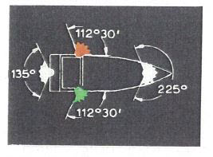 | 1 | |
- § 3.01
Begriffsbestimmungen und Anwendungen - Nr. 1:
Der Horizontbogen, über den das Topplicht, die Seitenlichter und das Hecklicht sichtbar sind
|
| 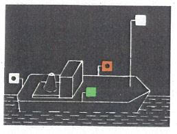 | 2 | |
- § 3.08
Einzeln fahrende Fahrzeuge mit Maschinenantrieb - Nr. 1:
Länge bis 110,00m
|
| 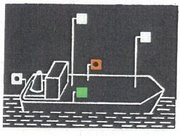 | 3 | |
- § 3.08
Einzeln fahrende Fahrzeuge mit Maschinenantrieb - Nr. 2:
Länge mehr als 110,00 m
|
| 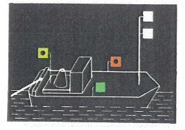 | 4 | 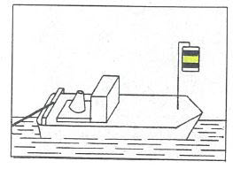 |
- § 3.09
Schleppverbände - Nr. 1:
Fahrzeug mit Maschinenantrieb, das allein an der Spitze des Verbandes fährt
|
| 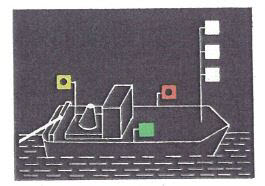 | 5 | 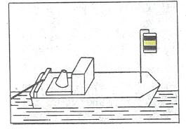 |
- § 3.09
Schleppverbände - Nr. 2:
Die Fahrzeuge mit Maschinenantrieb, die zu mehreren nebeneinander an der Spitze des Verbandes fahren
|
| 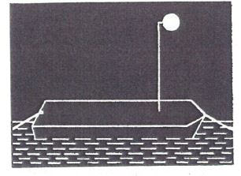 | 6 | 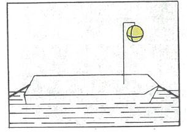 |
- § 3.09
Schleppen - Nr. 3:
Geschleppte Fahrzeuge
|
| 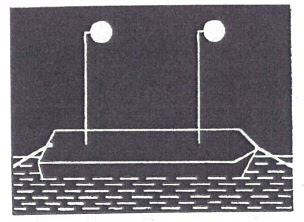 | 7 | 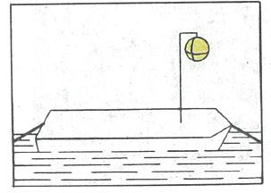 |
- § 3.09
Schleppen - Nr. 3:
Anhanglänge des Verbandes über 110,00 m
|
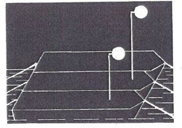
Geändertes Bild 8:
Das Licht auf dem mittleren Anhang befindet sich auf dem äußeren Anhang | 8 | 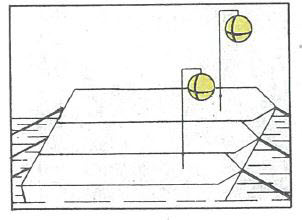 |
- § 3.09
Schleppen - Nr. 3 Buchstabe b:
Anhanglänge des Verbandes mit mehr als zwei längsseits verbundenen Fahrzeugen
|
| 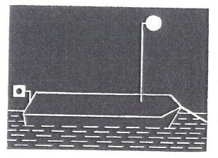 | 9 | 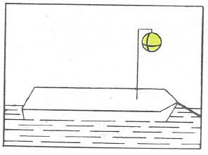 |
- § 3.09
Schleppen - Nr. 4:
Das Fahrzeug als letzte Anhanglänge des Schleppverbandes
|
| 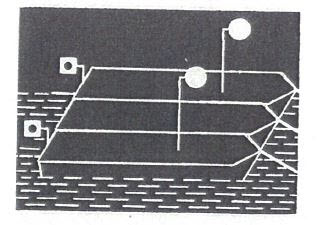 | 10 | 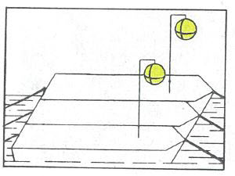 |
- § 3.09
Schleppen - Nr. 4:
Mehrere Fahrzeuge als letzte Anhanglänge des Schleppverbandes
|
| 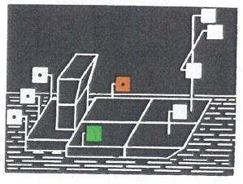 | 11 | |
- § 3.10
Schubverbände - Nr. 1:
Schubverband
|
| 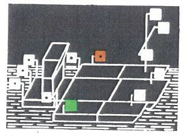 | 12 | |
- § 3.10
Schubverbände - Nr. 1 Buchstabe c:
Außer dem schiebenden Fahrzeug zwei oder mehr von hinten in ganzer Breite sichtbare Fahrzeuge
|
| 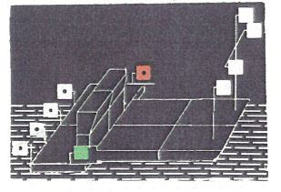 | 13 | |
- § 3.10
Schubverbände - Nr. 2:
Zwei schiebende Fahrzeuge
|
| 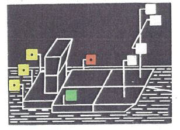 | 14 | 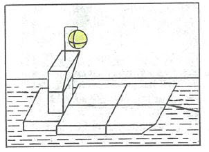 |
- § 3.10
Schubverbände - Nr. 3 und 4:
Geschleppte Schubverbände
|
| 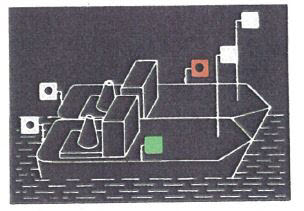 | 15 | |
- § 3.11
Gekuppelte Fahrzeuge - Nr. 1:
Zwei Fahrzeuge mit Maschinenantrieb
|
| 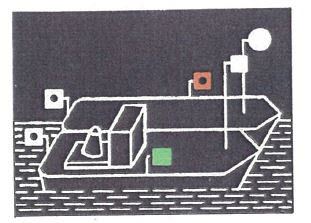 | 16 | |
- § 3.11
Gekuppelte Fahrzeuge - Nr. 1:
Ein Fahrzeug mit Maschinenantrieb und ein Fahrzeug ohne Maschinenantrieb
|
| 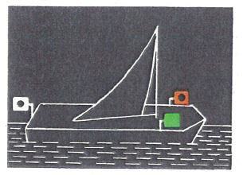 | 17 | |
- § 3.12
Fahrzeuge unter Segel
|
| 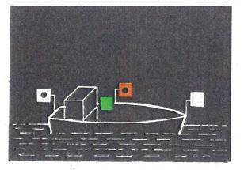 | 18 | |
- § 3.13
Kleinfahrzeuge - Nr. 1 Buchstabe a, b und c:
Kleinfahrzeuge mit Maschinenantrieb
|
| 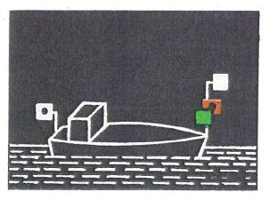 | 19 | |
- § 3.13
Kleinfahrzeuge - Nr. 1 Buchstabe d, e und f:
Kleinfahrzeug mit Maschinenantrieb mit Seitenlichtern unmittelbar nebeneinander oder in einer einzigen Laterne
|
| 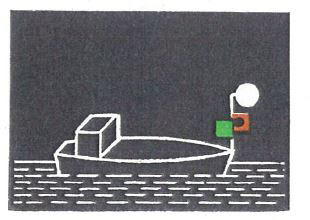 | 20 | |
- § 3.13
Kleinfahrzeuge - Nr. 1 Buchstabe f:
Kleinfahrzeug mit Maschinenantrieb mit einem von allen Seiten sichtbaren Licht
|
| 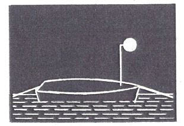 | 21 | |
- § 3.13
Kleinfahrzeuge - Nr. 3:
Geschleppt oder längsseits gekuppelt
|
| 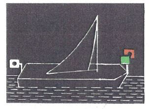 | 22 | |
- § 3.13
Kleinfahrzeuge - Nr. 4:
Unter Segel fahrend
|
| 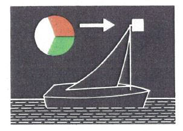 | 23 | |
- § 3.13
Kleinfahrzeuge - Nr. 4:
Unter Segel fahrend mit einer einzigen Laterne am Topp
|
| 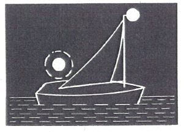 | 24 | |
- § 3.13
Kleinfahrzeuge - Nr. 4:
Unter Segel fahrend mit einem von allen Seiten sichtbaren Licht und bei Annäherung anderer Fahrzeuge ein zweites Licht zeigend
|
| 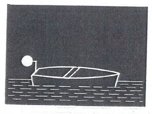 | 25 | |
- § 3.13
Kleinfahrzeuge - Nr. 5:
Einzeln weder mit Antriebsmaschine noch unter Segel fahrend
|
| 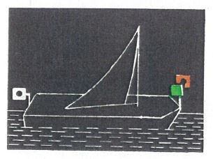 | 26 | 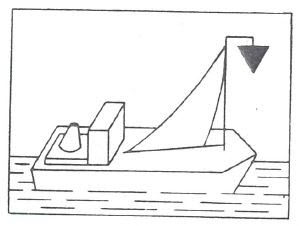 |
- § 3.13
Kleinfahrzeuge - Nr. 1 und 6:
Unter Segel und gleichzeitig mit einer Antriebsmaschine fahrend
|
| 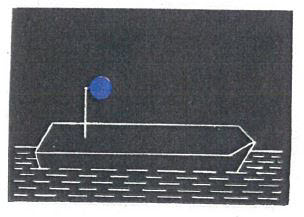 | 27a | 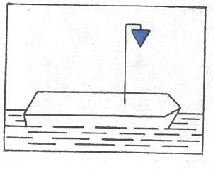 |
| | 27b | 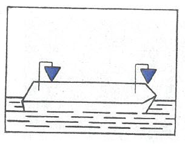 |
- § 3.14
Fahrzeuge bei Beförderung bestimmter gefährlicher Güter - Nr. 1:
Bestimmte entzündbare Stoffe nach ADNR
|
| 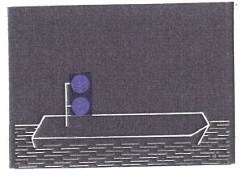 | 28a | 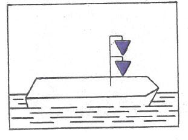 |
| | 28b | 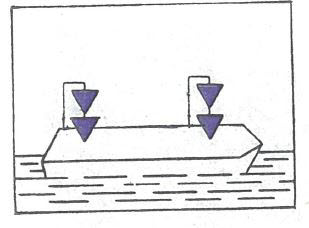 |
- § 3.14
Fahrzeuge bei Beförderung bestimmter gefährlicher Güter - Nr. 2:
Bestimmte gesundheitsschädliche Stoffe nach ADNR
|
| 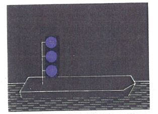 | 29 | 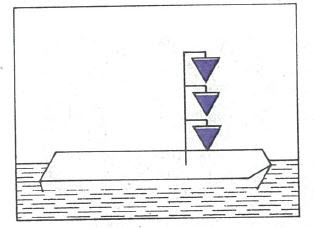 |
- § 3.14
Fahrzeuge bei Beförderung bestimmter gefährlicher Güter - Nr. 3:
Bestimmte explosive Stoffe nach ADNR
|
| 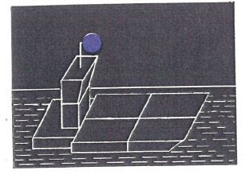 | 30 | 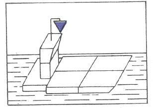 |
- § 3.14
Fahrzeuge bei Beförderung bestimmter gefährlicher Güter - Nr. 4:
Schubverband
|
| 31 | |
- § 3.14
Fahrzeuge bei Beförderung bestimmter gefährlicher Güter - Nr. 4:
Gekuppelte Fahrzeuge
|
| 32 | |
- § 3.14
Fahrzeuge bei Beförderung bestimmter gefährlicher Güter - Nr. 5:
Schubverbände mit zwei schiebenden Fahrzeugen
|
| | 33 | |
- § 3.15
Fahrzeuge, die zur Beförderung von mehr als 12 Fahrgästen zugelassen sind und deren Länge unter 20,00 m liegt
|
| 34 | |
- § 3.16
Fähren - Nr. 1:
Nicht frei fahrende Fähren
|
| 35 | |
- § 3.16
Fähren - Nr. 2:
Oberster Buchtnachen oder Döpper bei einer Gierfähre am Längsseil
|
| 36 | |
- § 3.16
Fähren - Nr. 3:
Frei fahrende Fähren
|
| | 37 | |
- § 3.17
Fahrzeuge, die einen Vorrang besitzen
|
| 38 | |
- § 3.18
Manövrierunfähige Fahrzeuge
|
| 39 | |
- § 3.19
Schwimmkörper und schwimmende Anlagen
|
| 40 | |
- § 3.20
Fahrzeuge beim Stilliegen - Nr. 1:
Fahrzeuge mit Ausnahme der Kleinfahrzeuge, Fähren und schwimmenden Geräte bei der Arbeit
|
| 41 | |
- § 3.20
Fahrzeuge beim Stilliegen - Nr. 2:
Kleinfahrzeuge mit Ausnahme der Beiboote
|
| 42 | |
- § 3.21
Stilliegende Fahrzeuge bei Beförderung bestimmter gefährlicher Güter
|
| 43 | |
- § 3.21
Stilliegende Fahrzeuge bei Beförderung bestimmter gefährlicher Güter: Schubverbände
|
| 44 | |
- § 3.21
Stilliegende Fahrzeuge bei Beförderung bestimmter gefährlicher Güter: Gekuppelte Fahrzeuge
|
| 45 | |
- § 3.22
Fähren, die an ihrer Landestelle stilliegen - Nr. 1:
Nicht frei fahrende Fähren
|
| 46 | |
- § 3.22
Fähren, die an ihrer Landestelle stilliegen - Nr. 2:
Frei fahrende Fähren
|
| 47 | |
- § 3.23
Schwimmkörper und schwimmende Anlagen
|
| 48 | |
- § 3.24
Fischereifahrzeuge mit Netzen oder Auslegern
|
| 49a | |
| | 49b | |
- § 3.25
Schwimmende Geräte bei der Arbeit sowie festgefahrene oder gesunkene Fahrzeuge - Nr. 1 Buchstabe a:
Durchfahrt frei an beiden Seiten
|
| 50a | |
| | 50b | |
- § 3.25
Schwimmende Geräte bei der Arbeit sowie festgefahrene oder gesunkene Fahrzeuge - Nr. 1 Buchstabe a und b:
Durchfahrt frei an einer Seite
|
| 51 | |
- § 3.25
Schwimmende Geräte bei der Arbeit sowie festgefahrene oder gesunkene Fahrzeuge - Nr. 1 Buchstabe c:
Schutz gegen Wellenschlag; Durchfahrt frei an beiden Seiten
|
| 52 | |
- § 3.25
Schwimmende Geräte bei der Arbeit sowie festgefahrene oder gesunkene Fahrzeuge - Nr. 2:
Festgefahrene oder gesunkene Fahrzeuge; Durchfahrt frei an einer Seite
|
| 53 | |
- § 3.26
Fahrzeuge und Schwimmkörper, deren Anker die Schiffahrt gefährden können - Nr. 1 und 3:
Fahrzeuge und Anker
|
| 54 | |
- § 3.26
Fahrzeuge, Schwimmkörper und schwimmende Anlagen, deren Anker die Schiffahrt gefährden können - Nr. 2 und 3:
Schwimmkörper, schwimmende Anlagen und deren Anker
|
| 55 | |
- § 3.26
Fahrzeuge, Schwimmkörper und schwimmende Anlagen, deren Anker die Schiffahrt gefährden können - Nr. 4:
Anker schwimmender Geräte
|
| 56 | |
- § 3.27
Fahrzeuge der Überwachungsbehörde
|
| 57 | |
- § 3.28
Fahrzeuge, die Arbeiten in der Wasserstraße ausführen
|
| 58 | |
- § 3.29
Schutz gegen Wellenschlag
|
| 59 | |
- § 3.30
Notzeichen
|
| 60 | |
- § 3.31
Verbot, das Fahrzeug zu betreten
|
| 61 | |
- § 3.32
Verbot zu rauchen, ungeschütztes Licht oder Feuer zu verwenden
|
| 62 | |
- § 3.33
Verbot des Stillliegens nebeneinander; - § 15.07 Nummer 8 Buchstabe a
Sorgfaltspflicht beim Bunkern von Flüssigerdgas (LNG)
|
| 63 | |
- § 6.04
Begegnen - Nr. 3:
Begegnen an der Steuerbordseite
|
| 64 | |
- § 3.08
Einzeln fahrende Fahrzeuge mit Maschinenantrieb - Nr. 3:
Schnelles Schiff
|
| 65 | |
- § 3.34
Zusätzliche Bezeichnung der Fahrzeuge beim Einsatz von Tauchern
|
| 66 |  |
- § 2.06
Kennzeichnung der Fahrzeuge, die Flüssigerdgas (LNG) als Brennstoff nutzen
|